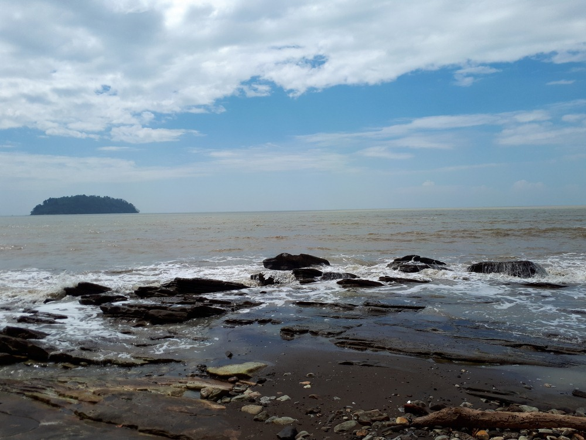

Pulau Mandalika
Untuk bisa sampai ke pulau yang memiliki pemandangan indah nan menakjubkan ini, wisatawan dapat menyewa perahu nelayan dan menyeberang laut selama kurang lebih setengah jam perjalanan. Tempat penyewaan perahu ini berjarak sekitar 2 km dari Desa Ujung Watu, tepatnya sebelah utara Laut Jepara.
Pulau Mandalika biasa digunakan sebagai tempat favorit untuk memancing. Di sekitar pulau memang banyak ditemukan ikan, seperti kakap dan kerapu. Pulau ini juga memiliki flora endemik bernama nongko celeng, yaitu tanaman nangka dengan buah yang tidak tumbuh di bagian batang, melainkan tumbuh dari pangkal akar.
Selain itu, Pulau Mandalika juga memiliki pantai indah dengan batu karang yang berdiri kokoh di sana. Pengunjung yang datang juga dimanjakan dengan berbagai sajian hidangan laut khas Jepara.